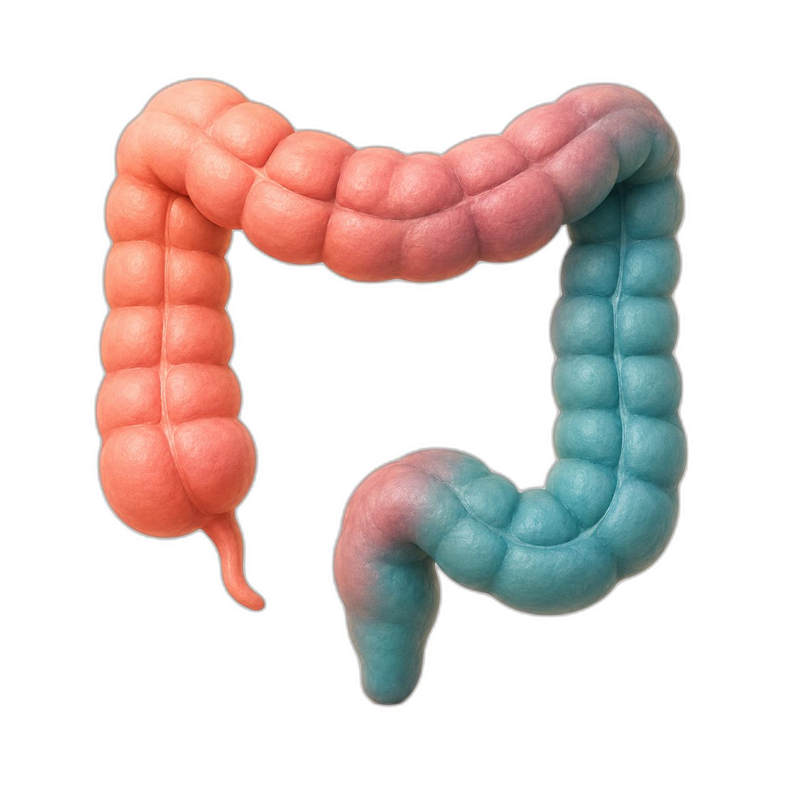
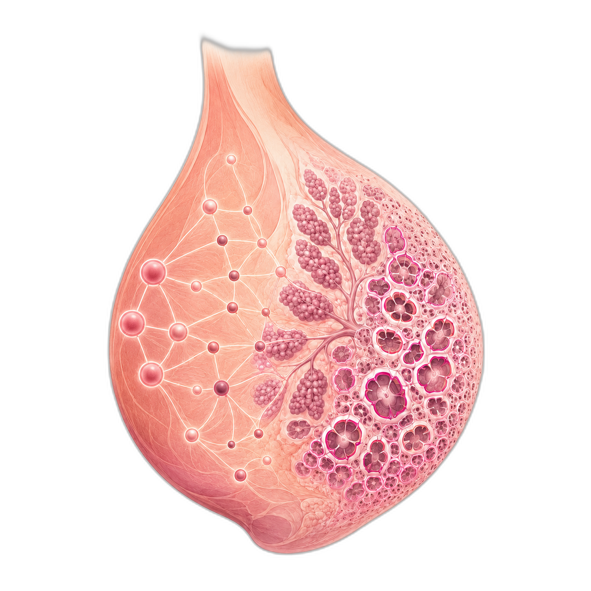
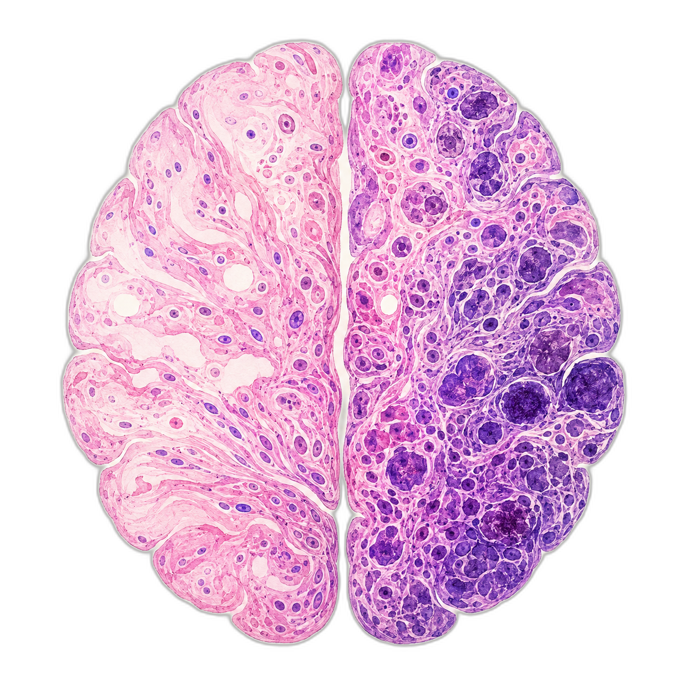
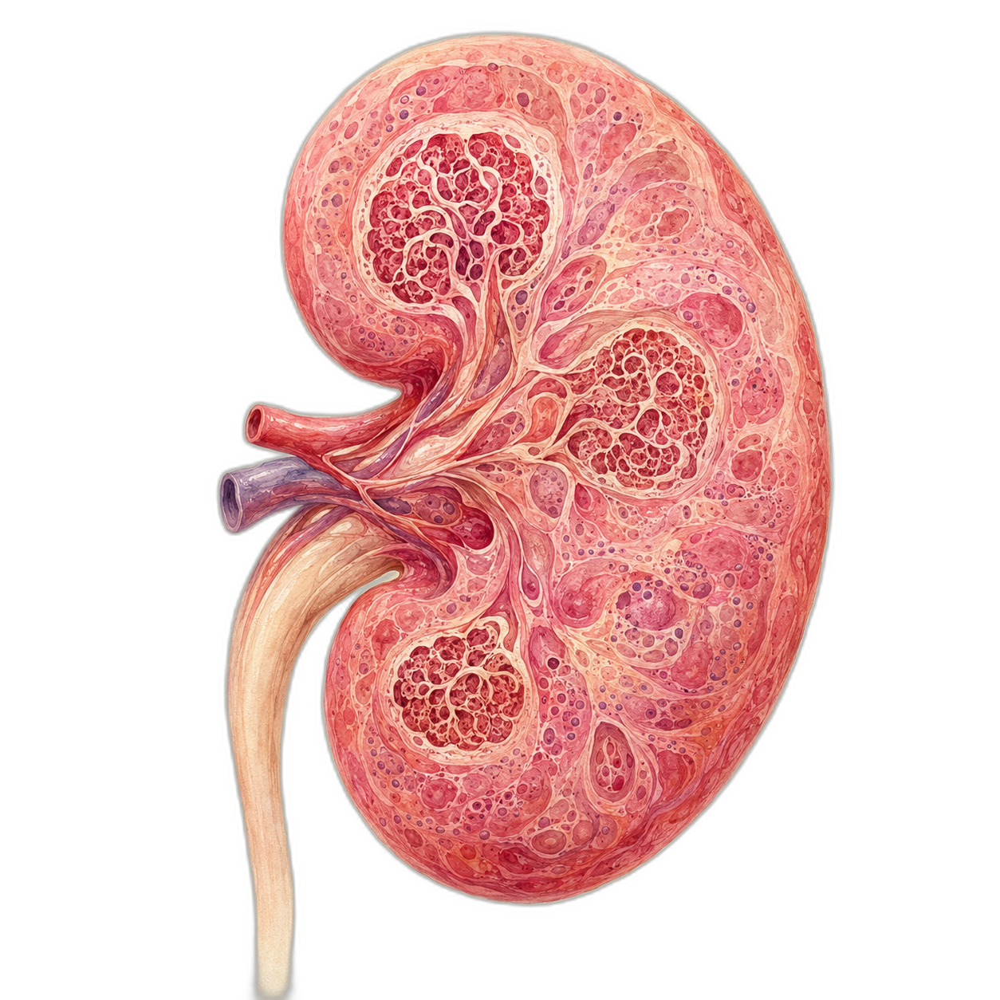
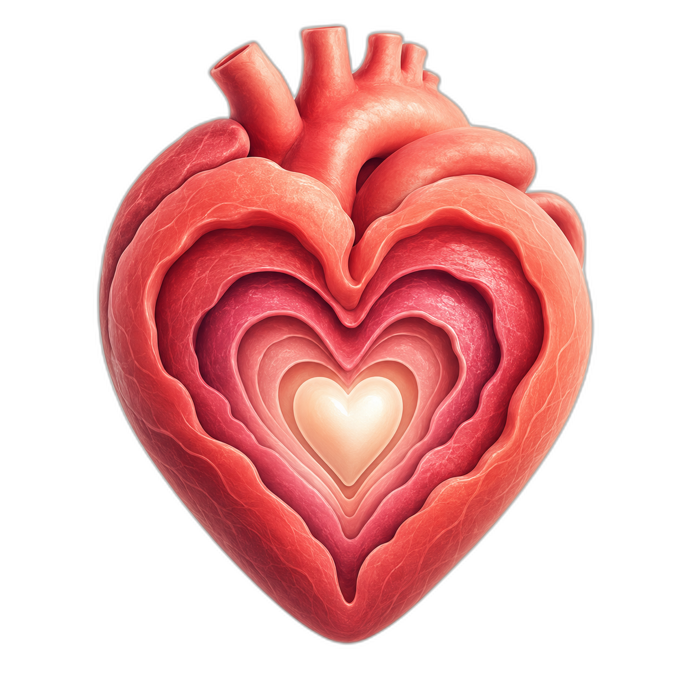
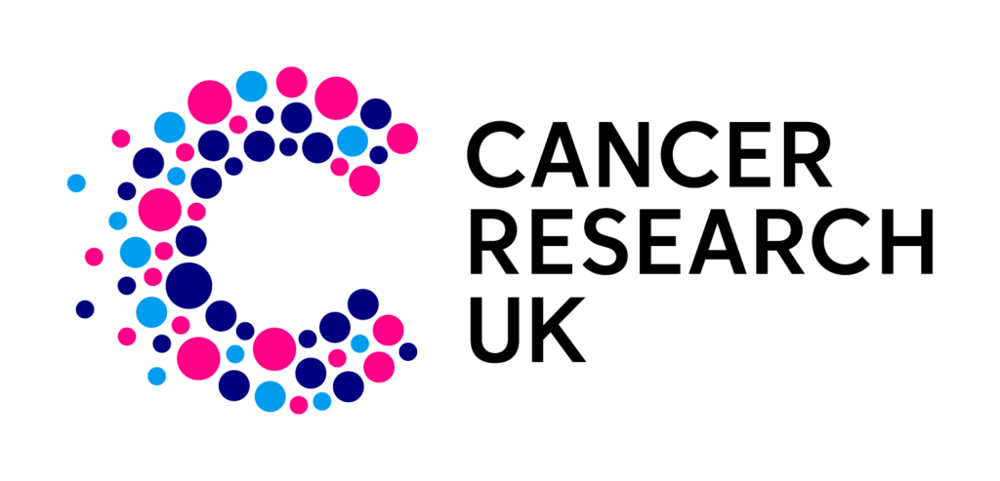
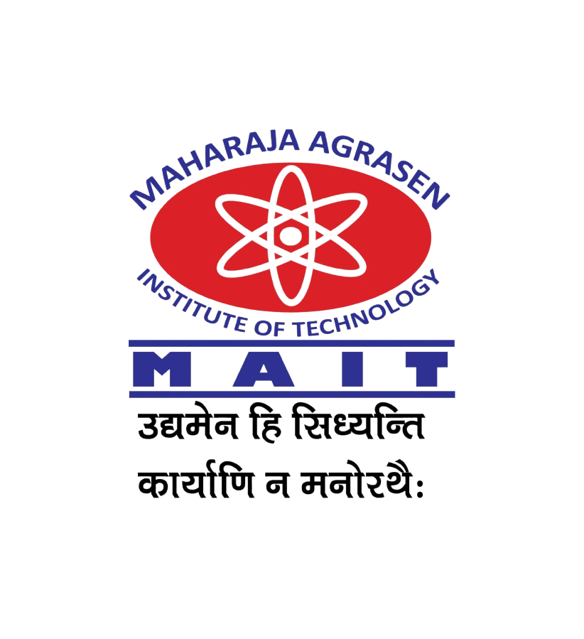
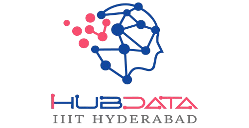
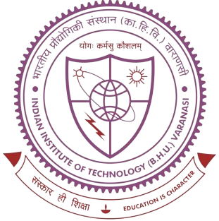
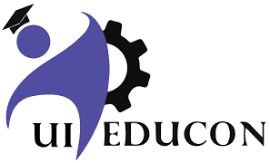

Building ML models, LLM agents, and AI systems across domains.
I build deep learning models, foundation model applications, and LLM-powered agents for healthcare, product, lifestyle, fintech, and beyond, and partner with teams on applied ML and research engineering.
ekansh@portfolio:~
ekansh@portfolio:~$
About Me
I am currently pursuing a PhD in Cancer Sciences at Cancer Research UK (CRUK) Scotland Institute and the University of Glasgow, under the guidance of Prof. Crispin Miller and Prof. Kevin Blyth. My research focuses on understanding cell interactions within the tumor microenvironment using computational and machine learning methods, specifically developing methods to combine spatial transcriptomics and histopathology image modalities using deep learning. I am also part of the PREDICT-Meso project, a European consortium dedicated to exploring the early stages of mesothelioma development.
Previously, I completed a Master's by Research at IIIT Hyderabad, working with the Cancer Diagnostics (DIAG) lab under Prof. Vinod P.K. and Prof. C.V. Jawahar. My research focused on deep learning-based automated classification of tumors using histopathology images.
I am passionate about addressing critical challenges in medical sciences through artificial intelligence, with a focus on cancer and other life-threatening diseases.
Alongside my research, I work with research groups, startups, and product teams on selected AI consulting and freelance projects - spanning machine learning models, deep learning systems, LLM agents, chatbots, and computer vision, across domains including healthcare, product, lifestyle, fintech, and science.
News & Announcements
Latest highlights
Recent milestones, presentations, and community work.
-
Co-authored a Nature study on MAPK-driven plasticity and colorectal cancer therapy resistance.
-
Published our HER2 scoring study in the Journal of Pathology Informatics.
-
Finished my first-year Annual Review at CRUK Scotland Institute.
-
Presented a poster at AI × BIO at the Wellcome Genome Campus.
Earlier updates
2025
- June Presented a poster at IPSCC at the CRUK Manchester Institute.
- June Built a multimodal breast-cancer subtype model at the CompBio Hackathon.
- May Attended the Beatson International Cancer Conference.
- March Joined ML in Science as an organizer.
2024
- December Publication in Nature Scientific Data.
- November Joined CRUK SI as a PhD student.
- September Secured a funded PhD at CRUK Scotland Institute & University of Glasgow.
- July Paper accepted at MIDL 2024.
- March Presented a poster at the R&D Showcase.
2022–23
- Jan 2023 Presented a poster at the R&D Showcase.
- Sep 2022 Paper accepted at FAIR, a MICCAI Workshop.
- Jan 2022 Joined Master's by Research at IIIT Hyderabad - funded by DST, Govt. of India 🎉
Research

Contrasting low- and high-resolution features for HER2 scoring using deep learning

Multiple Instance Learning for Glioma Subtype, Grading and IHC biomarkers using H&E Stained WSIs: An Indian Cohort Study

Lupus Nephritis Subtype Classification with only Slide Level Labels

LRH-Net: A Multi-level Knowledge Distillation Approach for Low-Resource Heart Network
Consulting & Freelance
Available for selected projects
I help research groups, startups, and product teams turn technically difficult AI ideas, from ML models and LLM agents to domain-specific chatbots into clear, testable systems.
AI Strategy & Prototyping
Problem framing, feasibility studies, model selection, and focused proof-of-concept development.
LLM Agents & Chatbots
RAG pipelines, agentic workflows, domain-specific assistants, and fine-tuned foundation model applications.
Computer Vision & Multimodal ML
Image classification, segmentation, multimodal learning, and domain-specific evaluation pipelines.
Domain AI
Applied ML across healthcare, product, lifestyle, fintech, and science — from model design to deployment.
Research Engineering
Reproducible ML workflows, scientific software, experiment design, and technical collaboration.
Education

Cancer Research UK SI & University of Glasgow
Nov 2024 – CurrentDoctor of Philosophy - Cancer Sciences
IIIT Hyderabad
Jan 2022 – Dec 2024Master of Science by Research - CSE (AI) CGPA: 9.17
Thesis: Deep Learning for Cancer Subtype Classification from Histopathology Images

Maharaja Agrasen Institute of Technology, Delhi
Aug 2017 – Jun 2021Bachelor of Technology - Information Technology CGPA: 8.66
Work & Teaching Experience

iHub-Data, Hyderabad
Research Fellow - Healthcare & AI
May 2021 – May 2022Game Theory, Bangalore
Intern - Computer Vision
May 2021 – May 2022
IIT (BHU), Varanasi
Research Intern - IoT & ML
Jun 2020 – Jul 2020IIIT Hyderabad
Teaching Assistant - NLP, Cognitive Science & AI
2022 – 2024KGGS Surjannagar
Visiting Senior Secondary Teacher - Mathematics, Chemistry
2019 – 2023
UI-Educon, Delhi
Affiliated Member - Ideation & Strategy
Feb 2019 – Jul 2023